操作系统
Overview
2023 / 09 / 19
Definition
计算机用户和计算机硬件之间的中介程序。
A resource allocator, a control program.
Startup
此时需要 bootstrap program 初始化操作系统并加载。通常被存储在 ROM 或 EPROM 中，也叫做 firmware。
Trap
软中断。由程序错误 (error，例如，除零 ) 或者用户请求引发 (system call)。
中断分为两种，硬中断 (H/W)，软中断。
为何使用软中断：
- 封装内存代码，方便调用。
- 可以对多个 users 的不同操作进行管理与协调。
在 RISC-V 中，所有的中断都称为 traps，分为两类 interrupts ( 硬中断 )，exceptions ( 异常 ) & ecalls ( 环境调用 ) ( 即软中断 )。
I / O
同步 (blocked，阻塞 )：I / O 设备发起后，用户的进程将不再进行。
异步 (non-block，非阻塞 )：尝试读取 I / O 设备状态，但用户程序不会完全中断。
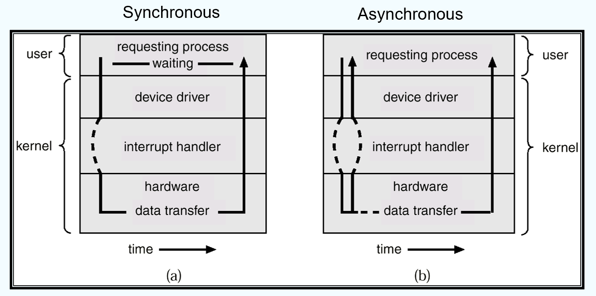
Device-Status Table
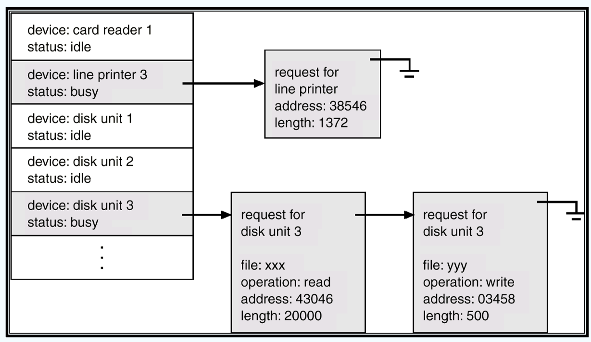
决定以何种顺序处理多个请求。
Multiprocessor / Multicore System
多处理器：共享主存。
多核处理器：共享 L2 缓存。
NUMA
The CPUs are connected by a shared system interconnect.
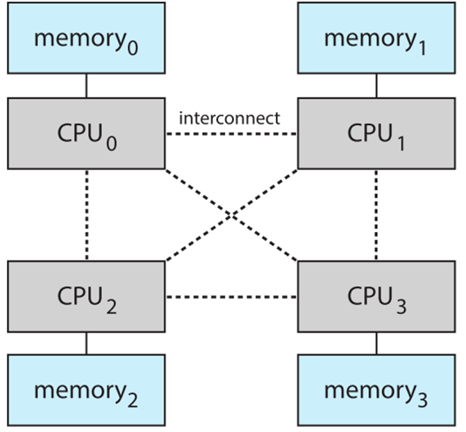
操作系统结构
multiprogramming：可以将多个程序存入主存进行运行，提高 CPU 的利用率。多道程序设计。
timesharing (multitasking)：多用户同时分享 CPU 资源，并可以得到相对应的相应。分时系统。
- 使用 CPU scheduling 规划多程序同时运行。
- 使用 Swapping 使得大规模的程序 ( 大于内存空间 )，可以运行。
- 使用 virtual memory 可以程序不完全在内存中运行。
操作系统会有两个 mode。如 User mode 和 kernel mode，用硬件上的一些 bits 进行表征。
- 一些特权指令只能在 kernel mode 下运行。
- 两种 mode 进行了隔离，不能同时处在两种状态。
以下为两种模式之间的切换步骤：
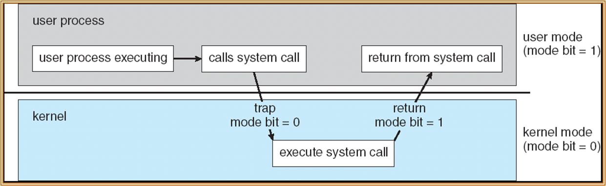
call system call 是一种软中断，也称 trap。实际上为程序为用户态提供了一系列的 API。
进程管理
进程是指一个程序的执行。程序是一个被动的实体，进程是一个积极的实体。
进程是资源的集合：CPU、内存、I/O、文件、程序的状态数据。
进程又可以分为多个线程，每个线程都会有一个 Program Counter。
CPU 的复用，指的就是多个程序并发地运行。可以分为时分复用和空分复用。
进程种需要解决许多问题，如：进程的同步、交流、创建、删除、防止死锁等。
内存管理
一般情况下，在运行程序时，数据和指令都需要在内存之中。
进程管理的内容：记录内存的使用状态、内存分配与回收、决定各个进程的内存使用。
储存管理
操作系统提供了统一、逻辑的信息存储视图。
储存的单元为文件，每种存储介质均被设备管理。
文件系统中：
- 可以使用目录结构进行管理。
- 进行文件访问的管理与控制。
大文件管理中：
- 通常使用硬盘进行存储。
- 由操作系统进行管理，进行存储分配和磁盘调度。操作系统的运行速度高度依赖于磁盘调度算法。
操作系统的目的：抽象 ( 系统调用 )、复用、隔离、共享 ( 多进程、多用户 )、安全、性能、功能
OS 结构
2023 / 09 / 26
OS Services
- User interface (UI)：分为 GUI 和 CLI。
- Program execution：包括用户程序和系统程序，能够处理报错。
- I / O、File system、错误处理、资源分配……
System Calls
用户模式进入系统模式的唯一方式，trap。
相较 API (Application Program Interface)，system call 更加底层。
POSIX API：Unix、Linux、MacOS 的通用标准，提供系统调用接口。
每种 system call 会被编号。被记录在一张表中，放在 system-call interface。
User 中调用：
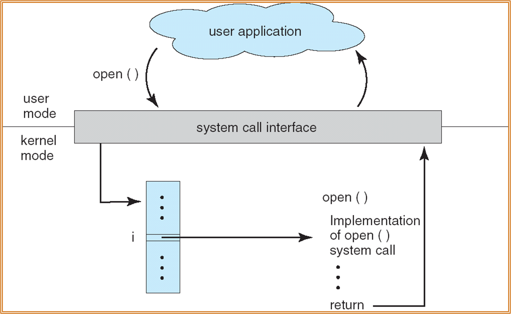
高级语言中调用：
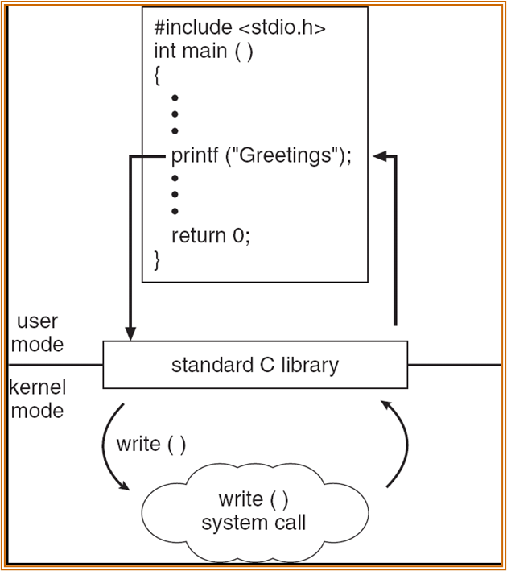
都是通过某个 interface 实现状态转换。
内核中 system call 的具体实现向上层封装，可以增加其可移植性。
参数传递
-
寄存器传递，最为简单的方式。
-
参数较多时，可以存在一个内存中的 Block 或者 table 中，将 Block 或 table 的地址通过寄存器传递。需要注意的是可能传递的地址为虚地址 ( 两种态之间的传递 )，需要经过转换。
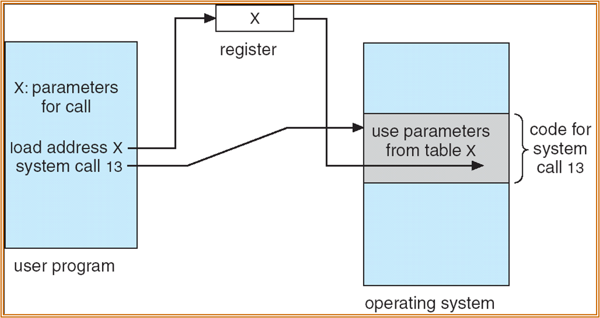
- 通过栈进行传递。但是栈在两种态下不一定能够共享，该方法不适用于所有的系统。
分类：进程管理 ( 创建 child pid- 等待 - 退出 )、文件管理、设备管理、信息维护 ( 如获取 pid)、交流、权限保护。
操作系统的设计和实现
设计的原则：What will be done? 策略 Policy。How to do it? 机制 Mechanism。需要将 Policy 和 Mechanism 分离。
分层结构
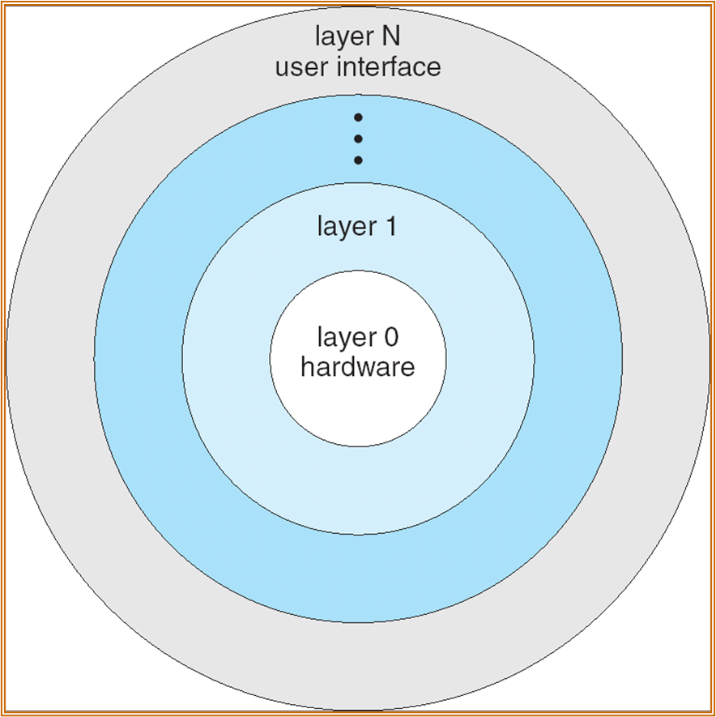
但这只是概念模型，实际上不同层级之间仍存在嵌套。
以下为 UNIX 的系统分层概念图。
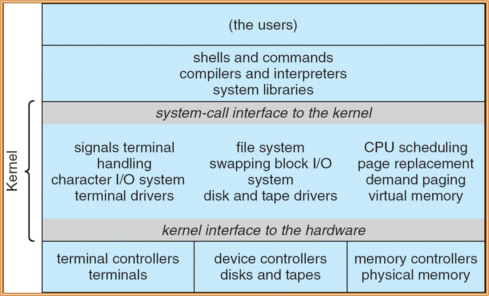
UNIX 为宏内核结构。对应的微内核 ( 仅实现基本的功能 )，示意如下：
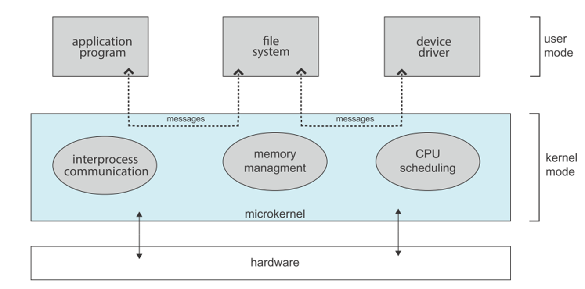
相比宏内核，许多程序需要在 User Mode 中实现。微内核有时需要通过进程通讯实现操作，效率相比宏内核可能降低。但微内核较为稳定、容易移植等。
现代的操作系统也会使用内核模块 (LKM) 这种机制 (Linux 为宏内核，但采用了模块化 + 动态加载的机制 )。
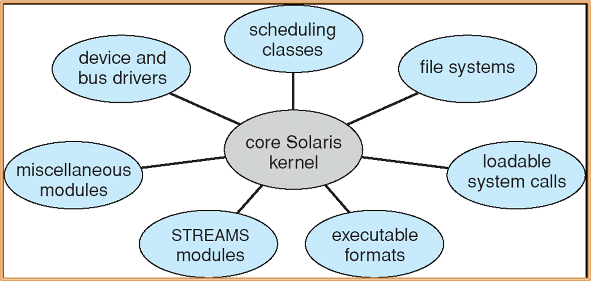
可以在需要使用时加载对应的模块到 kernel。
Exokernel：外核，内核高度简化，只负责资源分配和低级的硬件操作，必须使用定制的库供上层应用使用。
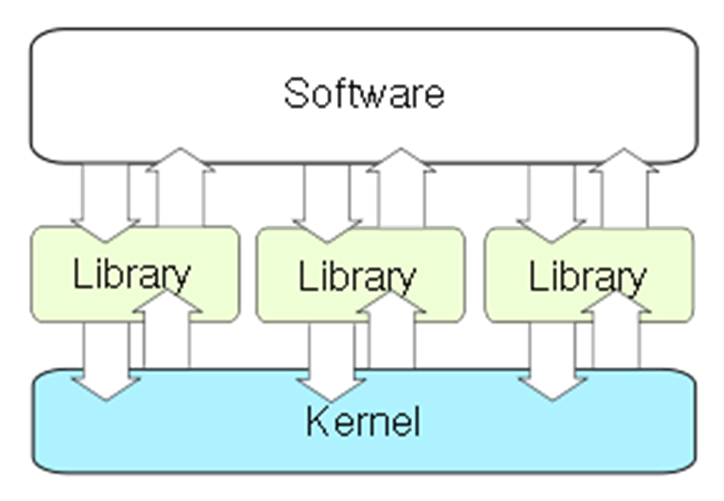
与微内核的区别在于，通过库而不是消息传递进行程序调用。存在兼容性问题，对于定制库文件不统一，维护难度较高。
虚拟机
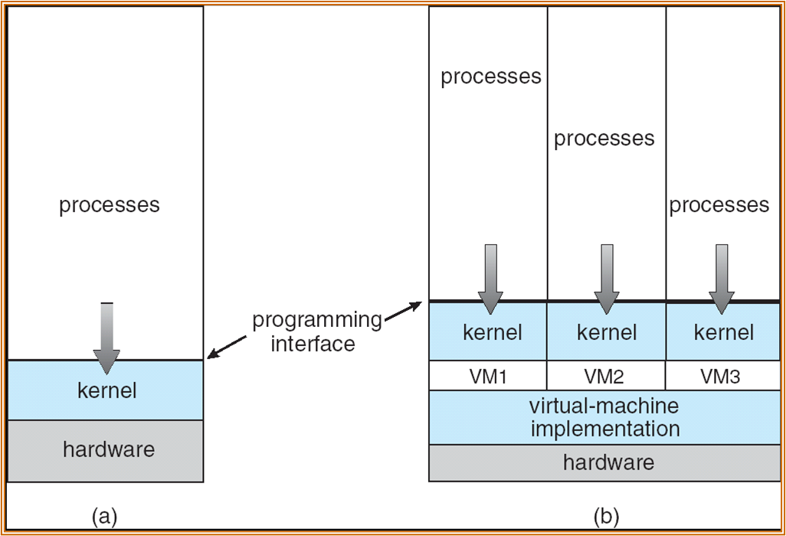
virtual-machine implementation，也称 hypervisor。
两种虚拟机的方案：Type 1 (bare-metal，虚拟机直接和硬件交互 )，type 2 (host，虚拟机依赖于宿主系统 )
进程
2023 / 10 / 07
概念
进程：一个正在执行的程序，且需要是被顺序执行。
一个进程由以下几个 sections 组成：
- text section ( 程序段、代码段 )
- data section ( 全局变量 )
- program counter
- 栈 stack ( 函数参数、局部变量、返回地址 ) ( 地址从高到低 )
- 堆 heap ( 动态分配的内存 ) ( 地址从低到高 )
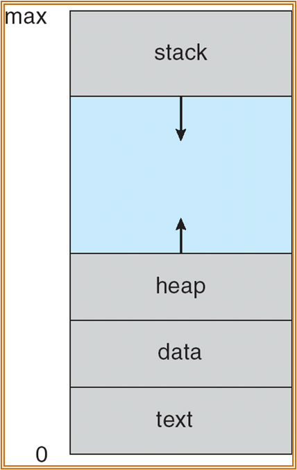
此处的地址为虚拟地址而非物理地址。实际上进程所使用的空间，只有 max 端以及 0 段一小部分的空间，中间大部分不用的空间称为 hole。
user code 和 kernel 不使用同一个 stack，每个进程都有自己对应的 stacks，以获得更好的隔离性
状态
一个进程有以下几种状态：
- new：正在被创建
- running：指令正在被执行
- waiting：进程在等待 ( 或 blocked) 一些事件 / 响应 ( 例如等待键盘响应、磁盘操作完成 )
- ready：进程等待处理器进行处理 ( 可能 CPU 处于非空闲状态 )
- terminate：任务完成
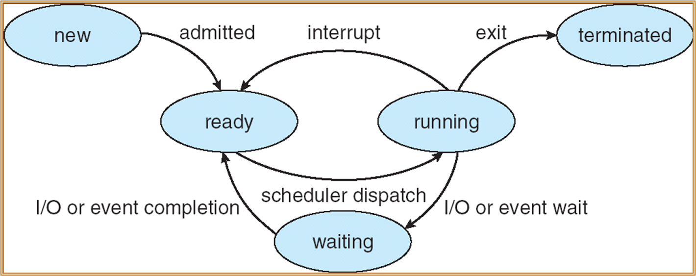
Process control block (PCB)
需要记录进程的状态、调度以及其他重要信息 ( 现场 )。
PCB 需要创建一种数据结构，其中具体需要记录的部分信息有：Process state、Program counter、Contents of CPU registers、CPU scheduling information、Memory-management information、Accounting information、I/O status information
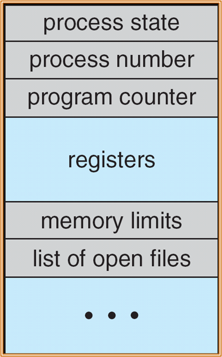
进程调度时需要保存进程的上下文，使等待结束后的进程可以正常运行。
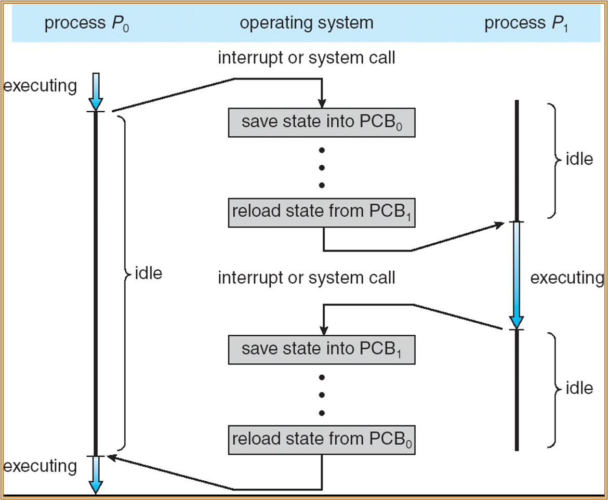
PCB 存储在 kernel stack 中。
调度队列 Process Scheduling Queues
-
任务队列 Job queue – set of all processes in the system
-
就绪队列 Ready queue – set of all processes residing in main memory, ready and waiting to execute
-
设备队列 Device queues – set of processes waiting for an I/O device，可能会有多个，每个设备对应一个队列
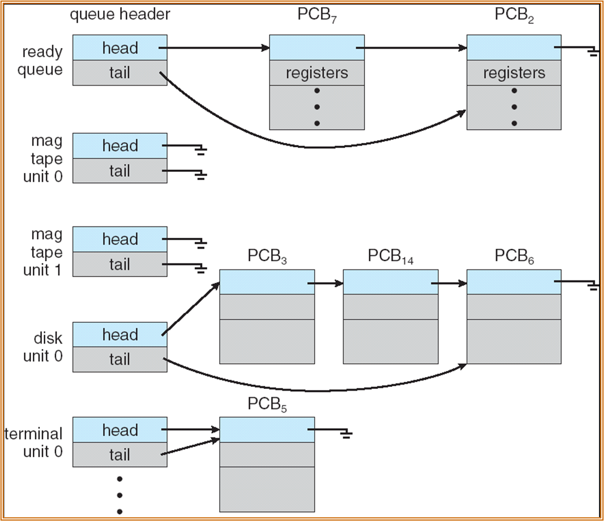
ready queue 实际上也是 CPU queue。
一个 PCB 一次只能出现在一个队列上。程序被顺序执行，而程序要使用 device 只能使用 system call。
一个进程被 timer interrupt 打断，会被重新放入 ready queue。
Job queue 会链接所有的进程，上图中未绘出。
进程会在 queue 之间迁移 migrate。
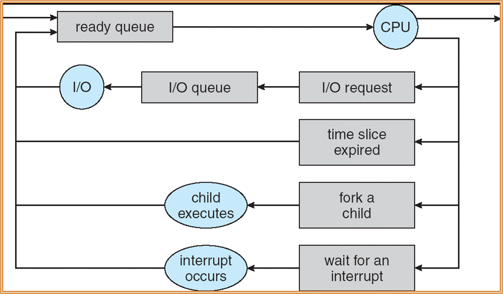
Schedulers
- Long-term scheduler (or job scheduler) – selects which processes should be brought into memory (the ready queue)
- Short-term scheduler (or CPU scheduler) – selects which process should be executed next and allocates CPU
当下，用户取代了 long-term scheduler 的角色。
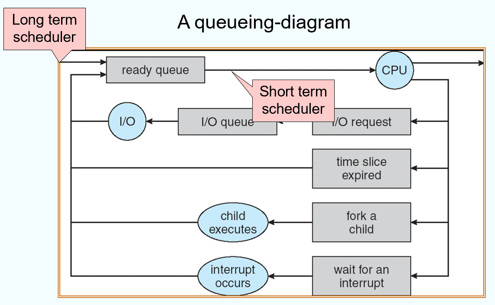
一般考虑 short-term。
进程 schedule 的速度需要尽量快以减少进程调用的 overhead 时间。
此外还有 medium-term scheduling，也称 swap-in, swap-out。当内存中的进程占用的空间过多时，需要对内存进行管理。
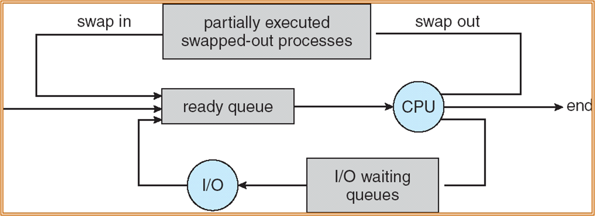
short-term scheduler 调用非常频繁。约 10 ms 就需要 timer interrupt 进行调度，是为了保证良好的交互性。
-
I/O 绑定，I/O-bound process – spends more time doing I/O than computations, many short CPU bursts
-
CPU 绑定，CPU-bound process – spends more time doing computations; few very long CPU bursts
Context Switch
上下文切换，切换不同的进程。
上下文切换时会 overhead，此时系统不可用。
进程创建
父进程可以创建子进程，子进程还可以创建自己的子进程，会形成一颗进程树。
-
父进程和子进程之间可以选择共享资源的范围 ( 从共享全部资源到不共享 )。
-
父进程和子进程可能并发进行也可能父进程等待子进程完成。
- 子进程和父进程的地址空间可能是复制关系 (Linux)，也可以由程序加载。
在 UNIX 中：
-
fork system call creates new process
-
exec system call used after a fork to replace the process’ memory space with a new program
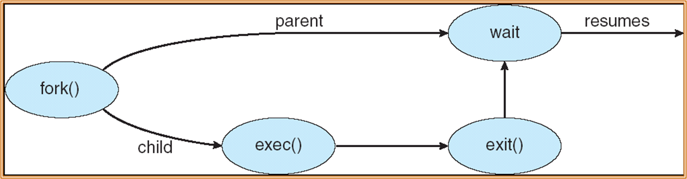
父进程的 pid 为 1 的进程称为 orphan 进程。
一个 fork 的例子如下：
| C++ | |
|---|---|
1 2 3 4 5 6 7 8 9 10 11 12 13 14 15 16 17 18 19 | |
一个进程树的示意如下：
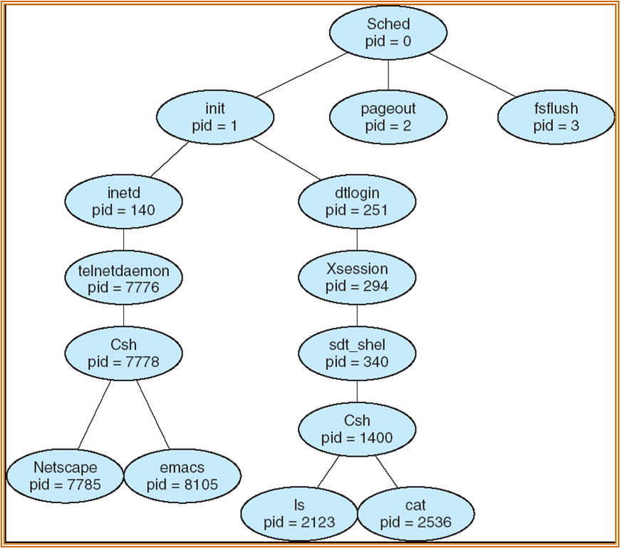
进程终止
分为 exit 和 abort，根据不同的操作系统设计，父进程可能会影响子进程的运行。(linux 不影响 )
进程的合作与通信
进程通信可以实现信息共享、计算加速、模块化设计。
Producer-Consumer Problem
producer process 生产信息，由 consumer process 使用，需要通过 buffer 实现信息的传递。
- unbounded-buffer：传递信息远小于 buffer 空间。
- bounded-buffer：buffer 的空间可能会被完全使用。
| C++ | |
|---|---|
1 2 3 4 5 6 7 8 9 10 11 12 13 14 15 16 17 18 19 20 21 22 23 24 25 26 27 28 | |
Interprocess Communication IPC
有两种方式：shared memory 和 message passing。
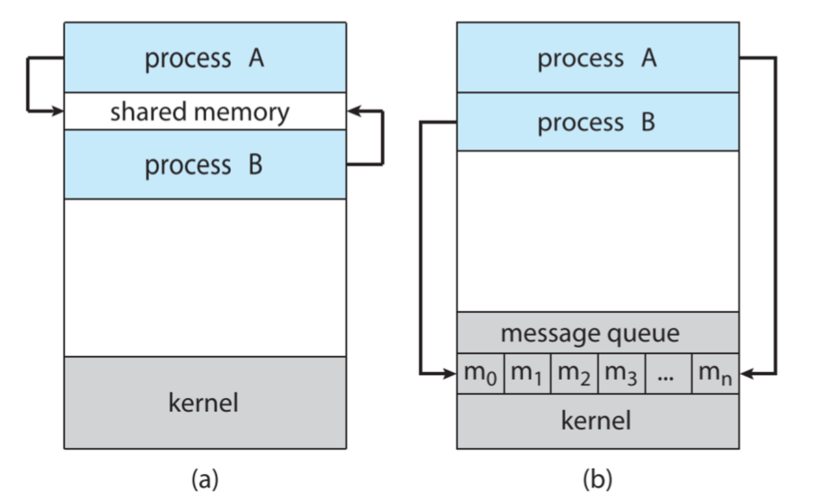
对于 message passing 这一方式，可以分为 Direct Communication，Indirect Communication。
直接通讯会自动建立两个进程之间的通讯。
Indirect Communication 则会从特定的 mailbox ( 也称为端口 ) 中传输信息。
信息传递也可以分为同步和异步的。其中同步意味着需要进行 blocking 的操作。
收发消息时需要建立一个消息队列 (buffer)，当 buffer 的容量为 0 时，发送者必须等待接收者。如果容量是 bounded 的，如果 buffer 满了，sender 也需要等待。如果是 unbounded 则无需等待。
线程
2023 / 10 / 17
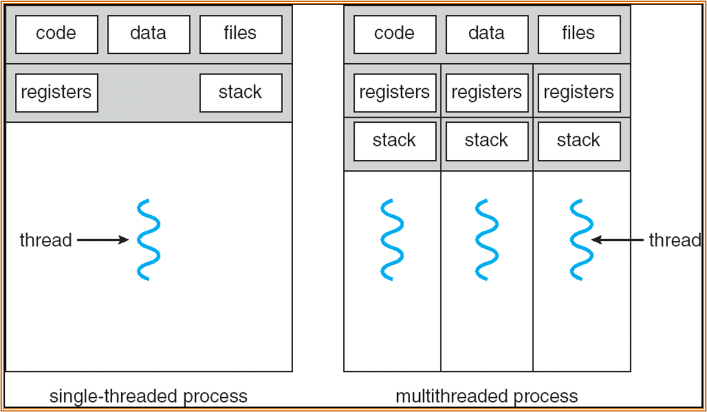
每个线程都代表这一个运行中的 context，有独立的寄存器和栈。不同的线程之间共享代码段、数据、文件。
多线程可以提升软件的响应性与交互性，可以节约、共享资源、提升并发性，更好地适配多核的架构。
User Thread & Kernel Thread
线程的实现可以只在用户态中实现 ( 所有 progress，kernel 均视为单线程 )。或也可以在内核态下实现。
multithreading model
如何实现多线程。
- many-to-one：多个用户层面的线程最终被映射到了单个内核层面的线程。单个线程的 blocking 会造成所有线程的 blocking。
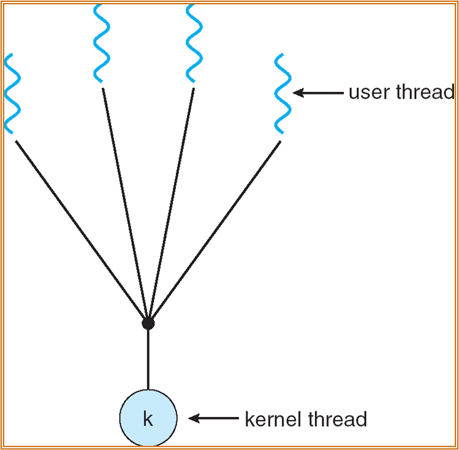
- one-to-one：用户态中创建一个线程，对应地，内核态中也创建一个线程。但若一个进程创建了过多的线程，会影响到系统的运行效率。
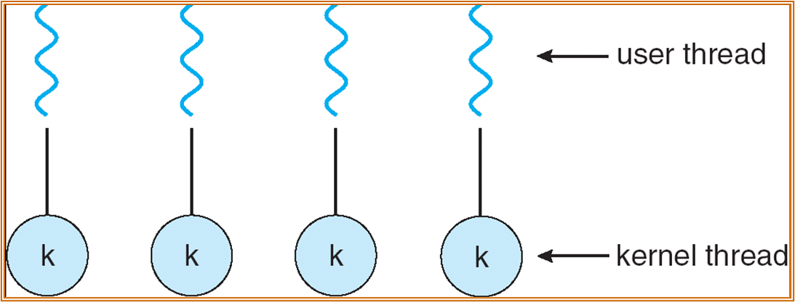
- many-to-many：内核态中有多个线程，但是不会无限多。
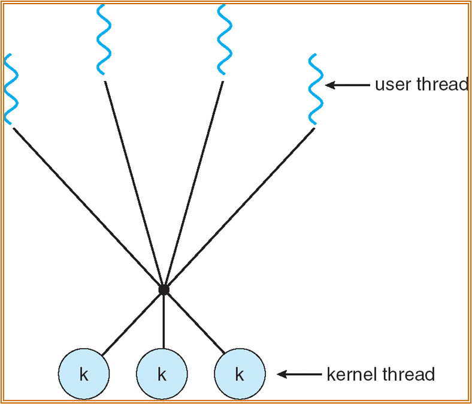
- Two-level model：不同的线程重要度不同，对重要的线程使用 one-to-one，非重要线程使用 many-to-many。
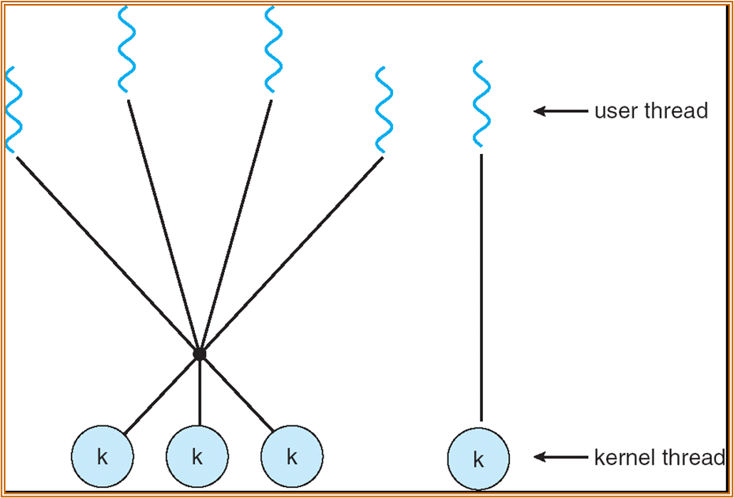
signal handling
signal 与 interrupt 的不同在于：interrupt 由 CPU 处理，signal 是一种 IPC 的方式，用于协调 signal 的是 kernel，处理 signal 的每个进程的 signal handler。
Thread Pools
线程池。希望对于 process request 的响应能够尽量快。非线程池情况下，响应 request 的流程为收到 request - create thread - 处理 - cancel thread。线程池会直接创建多个线程，收到 request 直接查找空闲线程进行调用。
线程池的大小取决于程序提供的 service 的容量。
Scheduler Activations
调度激活。保证 APP 始终可以运行指定数目的 thread。
CPU 调度
2023 / 10 / 19
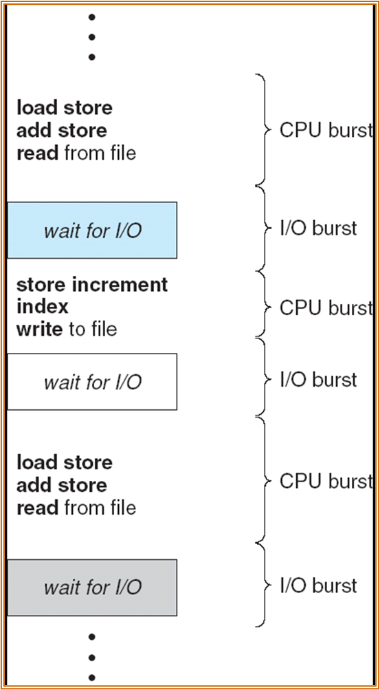
实际上 CPU burst 的时间很短，而 I/O 的时间很长。为提高 CPU 的利用率，需要进行 multi-programming。
CPU Scheduler 在以下的场景中会起作用：
- 一个进程从 running 进入到 waiting 状态 (I/O 请求或 wait())。
- 一个进程从 running 进入到 ready 状态 ( 中断 )。
- 一个进程从 waiting 进入到 ready 状态 (I/O 完成 )。
- 一个进程运行结束。
Note
以上的情况中，1、4 两种情况是 preemptive，2、3 为 nonpreemptive。
Dispather
将 CPU 的运行时间分派给各个进程。
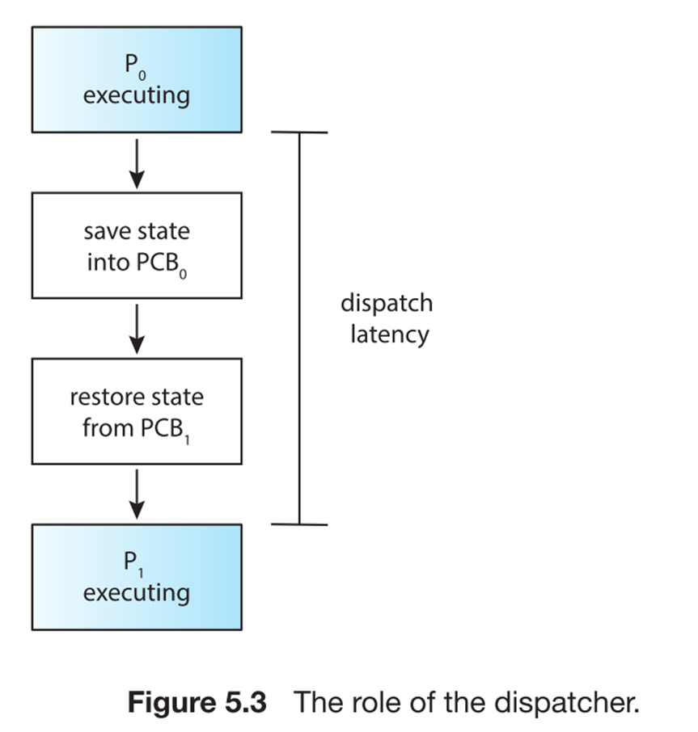
-
Dispatcher module gives control of the CPU to the process selected by the short-term scheduler; this involves:
-
switching context
-
switching to user mode
-
jumping to the proper location in the user program to restart that program
-
Dispatch latency – time it takes for the dispatcher to stop one process and start another running。
Note
Dispatch latency 对于 program 来说是 overhead。
调度 / 优化 Criteria
调度效率相关的指标有：
-
CPU utilization (CPU 利用率 ) – keep the CPU as busy as possible
-
Throughput ( 吞吐率 ) – # of processes that complete their execution per time unit
-
Turnaround time ( 周转时间 ) – amount of time to execute a particular process ( 从提交到结束运行的全部时间 )
-
Waiting time ( 等待时间 ) – amount of time a process has been waiting in the ready queue
-
Response time ( 响应时间 ) – amount of time it takes from when a request was submitted until the first response is produced, not output (for time-sharing environment)
优化时需要达到：
-
Max CPU utilization
-
Max throughput
-
Min turnaround time
-
Min waiting time
-
Min response time
调度算法
Gantt Chart
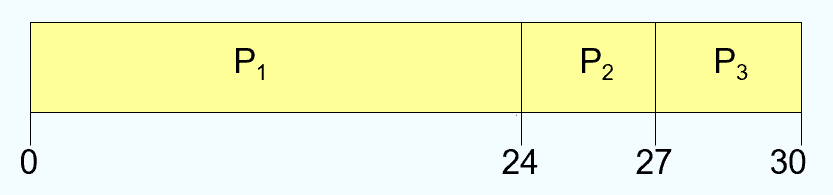
如上图所示，为 Gantt Chart 的一种。横坐标为时间轴。
First-come, First-served FCFS
最为基础的算法，先来的进程先处理。
| 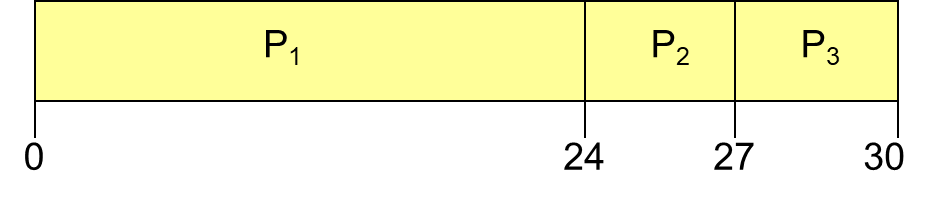 | 平均等待时间： P1 = 0 P2 = 24 P3 = 27 Pavg = 17 P3 的周转时间是 30 |
| 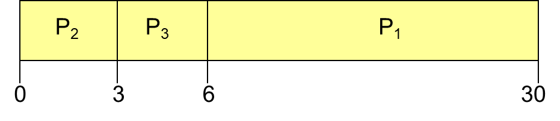 | 平均等待时间： P1 = 6 P2 = 0 P3 = 3 Pavg = 3 |
Shortest-Job-First SJF
对于每个进程，记录下一次 CPU burst time，优先运行时间最短的程序。
分为两种情况：抢占式与非抢占式。
对于非抢占式的调度，调度的时机是在某一进程结束运行时，从当前的 ready queue 中找出时间最短的进程。
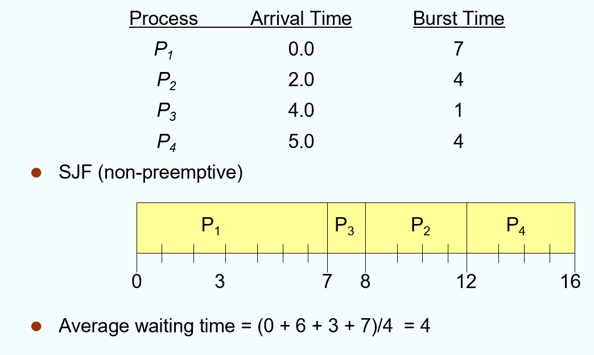
Warning
以上的等待时间计算时，需要减去 arrival time。
对于抢占式的调度，调度的时机是新进程到达的时间 / 进程运行结束的时刻，选择剩余 burst time 最短的进程进行调度。
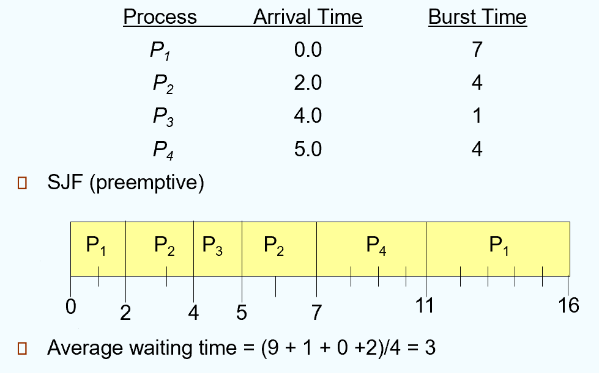
Warning
以上的等待时间计算时，需要考虑被打断后的等待时间，例如 P 1 在调度的中间存在 9 的等待时间。
Note
SJF 调度是理论上最优的调度方案。 但是不可测量 next CPU burst time，需要使用一定的估计方法。例如下图中的方法使用过去的调度时间来估计未来的调度时间。 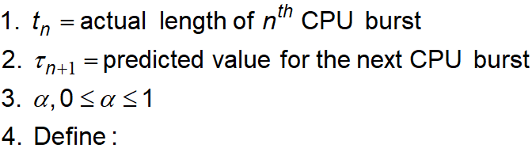
Priority Scheduling
此处定义编号 (priority number) 越小，优先级越高。
从本质上看，SJF 也是一种 priority scheduling。
-
Problem \(\equiv\) Starvation – low priority processes may never execute. 低优先级的进程永远得不到运行。
-
Solution \(\equiv\) Aging – as time progresses increase the priority of the process. 随着时间的推移增加等待的进程的 priority。
Round Robin RR
面向交互式系统 / 分时系统 ( 多任务系统 ) 。
每个进程都分配一个时间单元 (time quantum, q)。若 ready queue 中有 n 个进程，某进程最多等待 (n-1) * q 的时间就会得到调度。
Note
q large -> FIFO q small -> q must be large with respect to context switch, otherwise overhead is too high
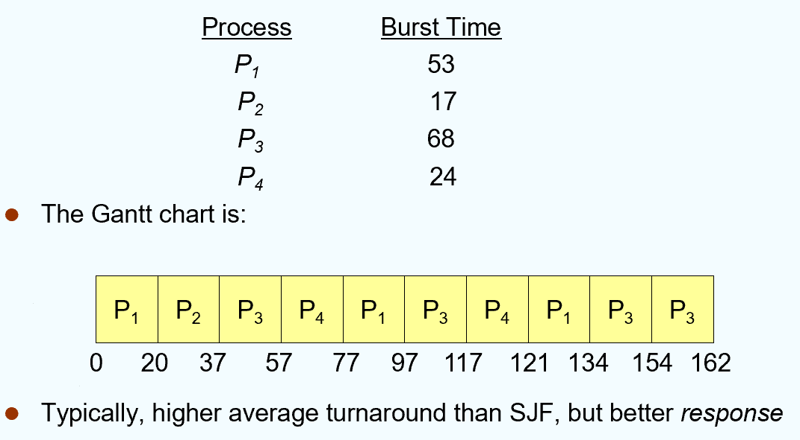
相比 SJF，可以发现虽然 SJF 的总运行时间短，CPU 效率高，但是相应时间可能不一定优于 RR。
Multilevel Queue
Ready Queue 被分为两个队列，前台 (foreground) 以及后台 (background) 两个队列。每个队列有自己的调度算法。
要较好实现需要解决两个问题：
- 两个队列之间的优先级问题 ( 例如，是否均为前台应用的优先级高于后台应用 )。
- 两个队列的 CPU 时间的分配 (time slice)。
Multilevel Feedback Queue
带反馈的多层队列。例如某一进程在 RR 调度下尚未完成运行，则调度程序会将其切换到另一个队列中继续运行。
原先静态的多级队列可能会导致一些 starving 问题，而“游走”可能可以解决这个问题。
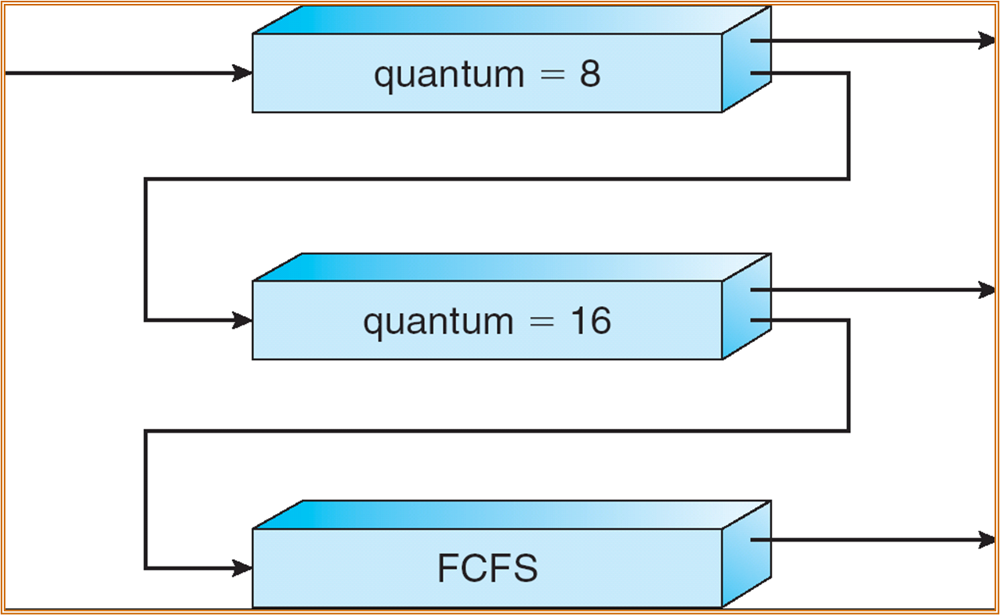
线程调度
也称为 contention scope。
-
Local Scheduling (Process-Contention Scope) – How the threads library decides which thread to put onto an available LWP.
-
Global Scheduling (System-Contention Scope) – How the kernel decides which kernel thread to run next.
进程同步
2023 / 10 / 26
Race Conditon
在之前的 producer-consumer 模型中加入共享变量 count 记录队列中元素的个数。producer 中 ++，consumer 中 --。
具体实现为：
register1 = count register1 = register1 + 1 count = register1
register2 = count register2 = register2 - 1 count = register2
若经过调度后顺序如下：
- S0: producer execute register1 = count {register1 = 5}
- S1: producer execute register1 = register1 + 1 {register1 = 6}
- S2: consumer execute register2 = count {register2 = 5}
- S3: consumer execute register2 = register2 - 1 {register2 = 4}
- S4: producer execute count = register1 {count = 6 }
- S5: consumer execute count = register2 {count = 4}
count 的值不符合期望。
Critical Section：可能由于共享内存产生冲突的部分 ( 但也存在不访问共享内存的部分 )。大致的模型如下：
| C | |
|---|---|
1 2 3 4 5 6 | |
若 Critical section 中的 statements 若在操作不同的 data item，可以将其分解为更细粒度的 critical section。细粒度的 critical section 可以有更好的并发性。
Critical section 需要满足三个条件：
互斥性 (mutual exclusion)，若一个进程在运行 critical section，与该进程存在合作关系的进程不可运行。
Progress，如果当前合作的进程中，没有进程处于 critical section 中，存在接下来希望进入 critical section 的几个进程，需要保证进程进入 critical section 不会被永久延迟 ( 有限时间内选择出执行 critical section 的进程 )。
有限等待 (Bounded Waiting)，一个进程发出请求执行 critical section ( 已经进入 entry section)，需要等待的时间一定是有限的。
- 假设每个进程运行速度一定非 0。但无进程间相对运行速度的假设。
软件方法 -- Peterson's Solution
| C++ | |
|---|---|
1 2 3 4 5 6 7 8 9 10 11 | |
硬件方法：关闭中断 ( 若 critical section 不能正常执行，中断无法开启；多核或多处理器的情况下，关闭中断代价较高 )，Atomic 指令 ( 执行时不允许中断 )。
TestAndSet solution
| C | |
|---|---|
1 2 3 4 5 6 7 8 9 10 11 12 | |
但是以上的方法不满足有限等待，可能会产生 starving 的问题。例如进程 1 3 互相抢占，进程 2 starving。
Swap Instruction
| C | |
|---|---|
1 2 3 4 5 6 7 8 9 10 11 12 13 | |
与 TestAndSet 类似，依然不满足有限等待。
Semaphore
semaphore S 为一个整型变量。
有两个基础的 atomic 操作：wait() 和 signal()。
| C | |
|---|---|
1 2 3 4 5 | |
| C | |
|---|---|
1 2 3 | |
若有多个进程同时处于 wait 的循环之中，S 被置为 1，由于 wait() 是原子操作，则某一进程退出循环后将会将 S 重新置为 0，其余进程将继续等待。
- counting semaphore：S 为整形变量。
- binary semaphore (mutex locks) ：S 只能为 0 或者 1。
| C | |
|---|---|
1 2 3 4 | |
Semaphore 可用于指定进程之间的调用顺序。
| C | |
|---|---|
1 2 3 4 5 | |
以上场景中，希望 S1 在 S2 之前运行，将 S 初始化为 0，可以实现目的。
由于需要保证 Wait() 和 Signal() 不能同时执行，wait 和 signal 操作也需要作为临界区代码执行。一种执行方式是加锁，进行忙等待。
另一种方式是可以不使用忙等待，利用 OS 本身的上下文切换机制。
| C | |
|---|---|
1 2 3 4 5 6 7 8 9 10 11 12 | |
使用信号量依然可能出现 deadlock 和 starving 问题。
Some Problems
Bounded-Buffer Problem
-
Semaphore mutex initialized to the value 1
-
Semaphore full initialized to the value 0, counting full items
-
Semaphore empty initialized to the value N, counting empty items.
| C | |
|---|---|
1 2 3 4 5 6 7 8 9 10 11 12 13 14 15 16 17 18 | |
Readers-Writers Problem
有多个 Reader 和多个 Writer。读操作可以并发，但一旦有写操作，只能由当前需要写的进程进行访问。
-
Semaphore mutex initialized to 1, to ensure mutual exclusion when readcount is updated.
-
Semaphore wrt initialized to 1.
-
Integer readcount initialized to 0.
| C | |
|---|---|
1 2 3 4 5 6 7 8 9 10 11 12 13 14 15 16 17 18 | |
只有第一个 reader 需要进行 wrt 的 wait 和 释放。
Dining-Philosophers Problem
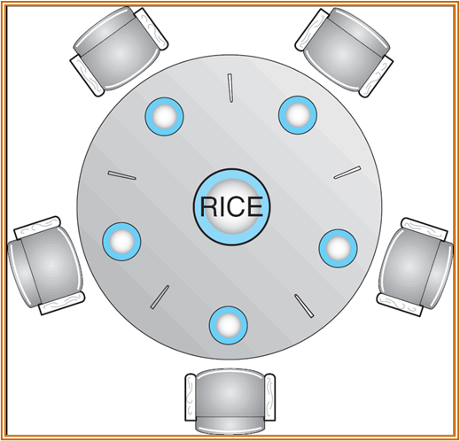
五个哲学家，5 支不同的筷子。只有当哲学家饥饿时，才会试图拿起自己左右两根筷子。
| C | |
|---|---|
1 2 3 4 5 6 7 8 9 10 | |
只需要更改取筷子的顺序即可。一部分哲学家先取左侧的筷子，一部分先取右侧的筷子即可。
Monitor 管程
一种高层抽象的机制，实现线程之间的同步。
| C | |
|---|---|
1 2 3 4 5 6 7 8 9 10 | |
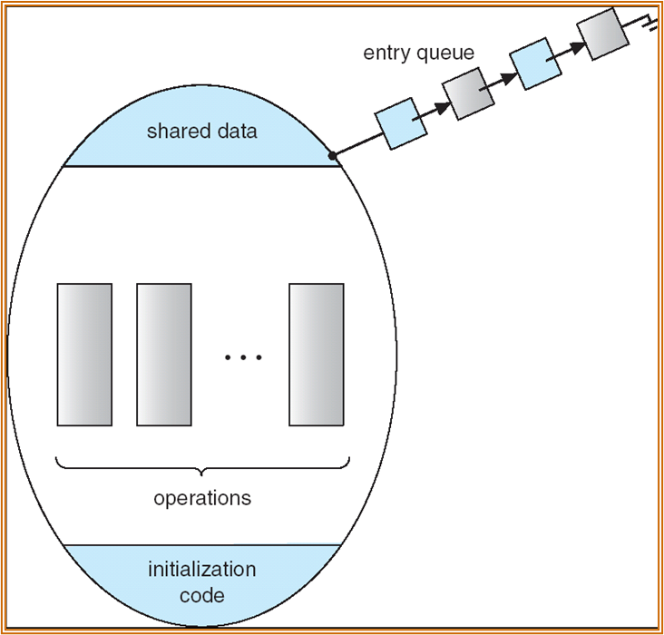
除了正在运行的程序，其他程序处于 Queue 中等待进入。
Condition Variable
一个进程进入管程后被阻塞，阻塞的原因定义为条件变量。原因可能有多个，故可能有多个条件变量队列。
-
Two operations on a condition variable:
-
x.wait () – x 条件不满足，正在调用 monitor 的进程使用该操作将自己插入 x 的等待队列，释放管程，其余进程也可进入。
-
x.signal () – x 条件变化。调用该操作。唤醒一个被 x.wait() 阻塞的进程。
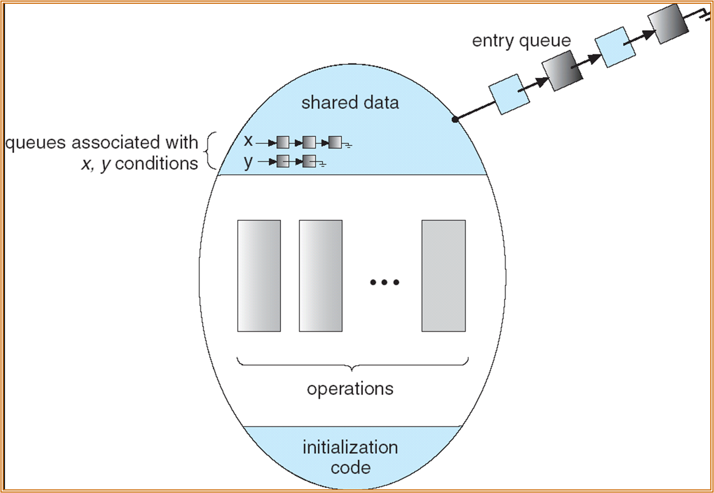
| C++ | |
|---|---|
1 2 3 4 5 6 7 8 9 10 11 12 13 14 15 16 17 | |
死锁
2023 / 11 / 09
由于多个进程的并发执行，多个进程因竞争造成一种互相等待的情况，若无外力干涉无法推进。
| 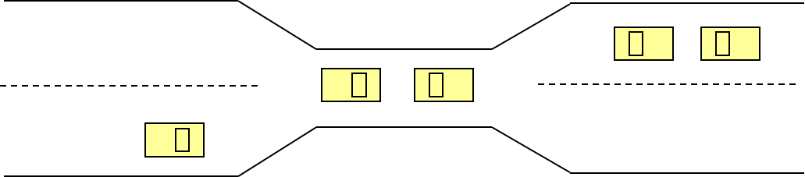 | 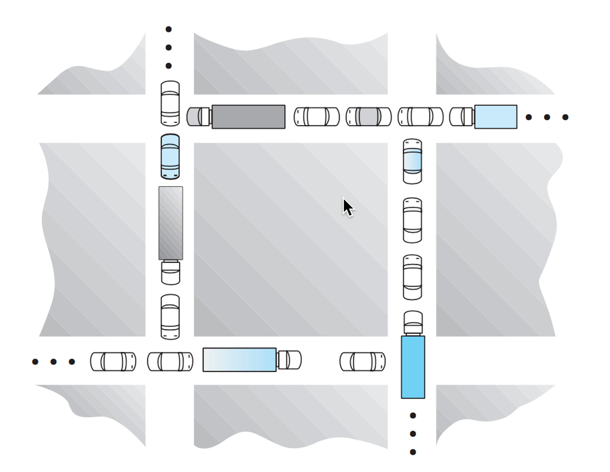 |
|---|---|
死锁的原因：存在资源的共享。
系统模型：
- 有资源 R 1 ~ R m，CPU cycles, memory space, I/O devices 等，每种资源有多个实例 W i
- 遵循 request - use - release 协议
在上述的系统模型之下，死锁的条件为 ( 均需满足 )：
-
Mutual exclusion: only one process at a time can use a resource.
-
Hold and wait: a process holding at least one resource is waiting to acquire additional resources held by other processes.
-
No preemption: a resource can be released only voluntarily by the process holding it, after that process has completed its task.
-
Circular wait: there exists a set {P0, P1, …, Pn} of waiting processes such that P0 is waiting for a resource that is held by P1, P1 is waiting for a resource that is held by P2, …, Pn–1 is waiting for a resource that is held by Pn, and Pn is waiting for a resource that is held by P0.
Resource-Allocation Graph
A set of vertices V and a set of edges E.
V is partitioned into two types:
-
P = {P1, P2, …, Pn}, the set consisting of all the processes in the system.
-
R = {R1, R2, …, Rm}, the set consisting of all resource types in the system.
request edge – directed edge P1 \(\to\) Rj
assignment edge – directed edge Rj \(\to\) Pi
| Process | Resource Type with 4 instances |
|---|---|
 |
|
| Pi requests instance of *Rj* | Pi is holding an instance of *Rj* |
 |
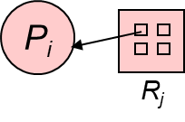 |
Warning
- 没有环路一定无死锁，有环路不一定有死锁
- 有环路：
- if only one instance per resource type, then deadlock.
- if several instances per resource type, possibility of deadlock.
死锁处理
死锁预防
使系统不会产生死锁的情况。使死锁的 4 个条件中有条件无法完成。
具体来说需要避免 circute wait 的产生：将所有的 resource type 都进行编号，使所有的资源只能序号从低到高地申请。但通常在现实地 OS 中不可能这样操作。
死锁避免
仍属于预防范畴，但不是去避开死锁条件，而是防止进入系统“不安全状态”。
系统安全状态：在资源分配时检查是否安全。
- 系统能按照某种顺序推进程序，并提供相应的资源，直至每个进程对资源的最大需求被满足。
- 若找不到这样的序列，则说明系统不安全。
- 不安全不一定死锁。
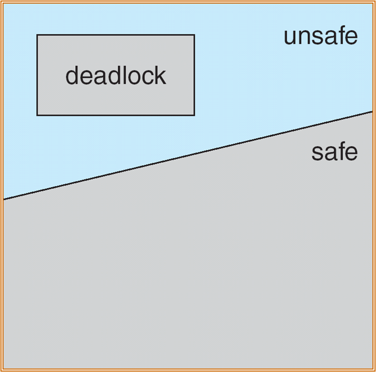
若每种资源只有一个实例，使用 RAG。
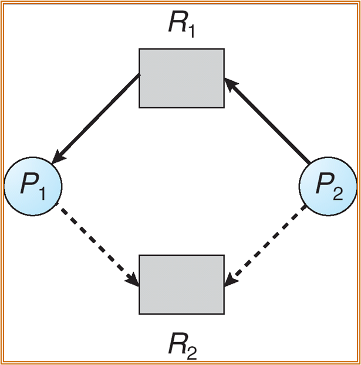
虚线为 claim edge 未来可能会 request。实线表示 request 和 assign。
每次分配时需要检查系统是否存在环路 ( 包括 claim)，若存在，需要拒绝最近的 request。
若每种资源有多个实例，使用 banker's algorithm。
将操作系统视为银行家，操作系统管理的资源相当于银行的资金。进程请求资源视为贷款。需要保证不出现资金短缺的情况。
有几点前提：
- 每种资源有多个实例。
- 每个进程事先声明了自己的最大资源使用量。
- 申请资源时，进程有可能会等待。
- 进程得到了需要的资源时，会在有限的时间内会归还资源。
n = number of processes, and m = number of resources types
- Avaliable 数组，表示各类资源的可用实例，若 Avaliable[j] = k，R j 类型的资源有 k 个实例可供调用。
- Max[n][m] 矩阵，一行一个进程，一列一种资源，表示最大的需求量。
- Allocation[n][m] 矩阵，进程已经分配到的资源。
- Need[n][m] 矩阵，进程接下来最多还需要多少资源。
\(Need[i,j]=Max[i,j]-Allocation[i,j]\)
Safety algorithm
Work[m] 表示剩余可用的资源，初始化为 Avaliable。
Finish[n] 表示每个进程是否结束，一开始均设为 false。
- 若存在 i 使得，Finish[i] = false，Need[i] <= work，正常运行。若不存在，则转到第三步。
- Work += Allocation，Finish[i] = true，回到第一步。
- 若 Finish[n] 全是 true，系统处于安全状态。
Resource-Request Algorithm
Request i [m] 为进程 P i 的请求向量。
-
若 Request i [j] <= Need[i, j]，跳转 2。若不是，视为出错。
-
若 Request i [j] <= Avaliable[i, j]，跳转 3。否则进程需要等待资源。
-
系统试探性地分配资源。
$$ Avaliable = Avaliable - Request; \ Allocation[i,j] = Allocation[i,j]+Request_i[j] \ Need[i,j] = Need[i,j]-Request_i[j] $$
- 使用 Safety Algorithm 检查是否安全，若安全，则分配；不安全，则回退。
死锁检测
Wait-for Graph
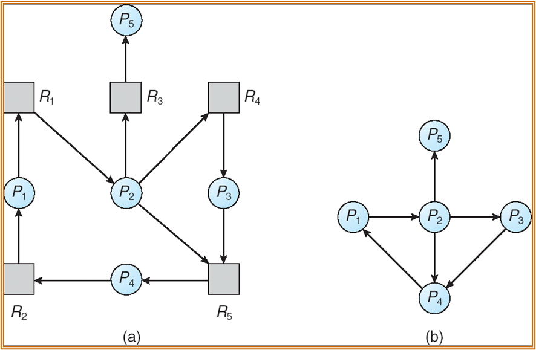
单实例地情况下若 Wait-for graph 中存在有向环路，则有死锁。
多实例检测
- Avaliable[m]
- Allocation[n][m] 当前的分配情况。
- Request[n][m] 当前的请求情况。
Work[m] 表示剩余可用的资源，初始化为 Avaliable。
Finish[n] 表示每个进程是否结束，一开始，若 Allocation[i] == 0，则设为 true，不然为 false。
Detection Algorithm 如下：
- 若存在 i 使得，Finish[i] = false，Need[i] <= work，正常运行。若不存在，则转到第三步。
- Work += Allocation，Finish[i] = true，回到第一步。
- 若 Finish[i] == false，则进程 P i 死锁。
死锁恢复
- Abort all deadlocked processes.
- Abort one process at a time until the deadlock cycle is eliminated.
主存
2023 / 11 / 16
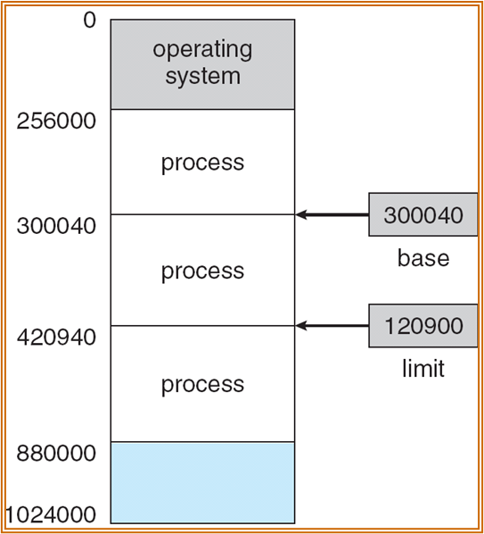
使用 Base 和 Limit 寄存器，表示一个进程的进程空间。
Addressing
一般的地址表示为整数形式 (absolute address)，此外，地址还可以表示为：
- Symbolic Address：主要用于高级编程语言，地址可以与变量相关联。例如数组名就表示一个地址。
- Relocatable Address：可重定位地址，相对某个 module 的地址。当 module 落实到一个实际地址中时，Relocatable address 也会落实到实际地址。
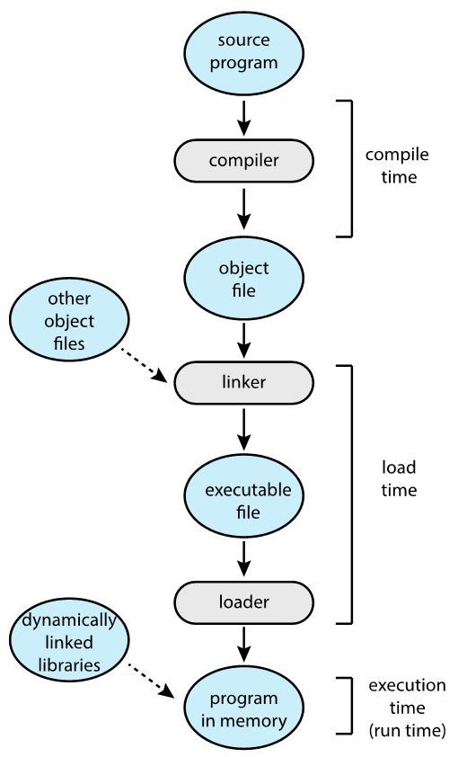
在 Compile 阶段主要使用 Relocatable address，目的是方便后续进行文件链接。
在 Linker 阶段，链接多个 .o 以及库文件，输出可执行文件。
执行阶段，映射到绝对地址。
地址绑定
何时确定实际地址：
- Compile time / Load time / Execution time
- 现代操作系统大多在 Execution 阶段进行映射。允许程序在内存中移动。
- DOS 在 Compile time 进行地址映射，即直接将代码中的 symbol 转化为实际地址。
- Load time 在加载程序到内存时确定地址映射。但程序运行之后地址不会发生改变。
Execution time 阶段映射需要 CPU 硬件的支持，需要实现逻辑地址 ( 虚拟地址 ) 和绝对地址 ( 物理地址 ) 的分离。
Logical Address：又称为 Virtual address。由 CPU 指令中产生。
Physical Address：内存中的实际地址。
对于在 Compile 和 Load 阶段进行地址绑定的操作系统，逻辑地址和物理地址没有区别。
对于 Execution time 进行需要一定的方式进行二者之间的转化。一般使用 MMU (Memory-Management Unit)，进行硬件转化。
通过重定位寄存器，将逻辑地址加上一个偏移值，转化为一个物理地址。
Note
Dynamic Loading
允许进程代码不完全加载，仅加载需要使用的模块。减轻系统的内存压力。
Dynamic Linking
链接的时候不需要链接所有的文件 (不用链接动态链接库)。使用桩模块 (stub) 代替原先的函数体，桩模块会找到对应的函数体进行运行。
Contiguous Allocation 连续 / 相邻分配
主存会分为两个部分，一部分供操作系统常驻，一部分供用户进程使用。当 trap into system call 时，会使用到系统部分的内存。
- multiple-partition allocation：将进程作为一个整体进行分配，分配一整块内存。进程内存有限制，使用超出会出错。由于进程的运行时间不同步，程序运行时会产生大量的 holes，操作系统需要存储每个进程的 relocation register 和 limit，同时维护一个 holes 组成的链表。
- 寻找 holes 有多种方法：First-fit ( 第一个 hole)，Best-fit ( 最小的 hole)，Worst-fit ( 最大的问题 )。
Fragmentation
- External Fragmentation：外部碎片问题，由于系统的动态加载，导致很多不连续的 holes。
- Internal Fragmentation：内部碎片问题，由于进程实际分配的内存与进程需要的内存大小不一致，存在进程不会使用的内存空间。
为解决外部碎片问题，可通过 compaction ( 紧致 )，进行进程的拷贝与搬运，制造大块的连续空间。但这种方式会导致较大的开销。
Paging
非连续分配。
将虚地址空间分解为 pages，将物理地址空间分解为 frames。给进程分配内存时，以一个 frame (physical page) 为单位进行分配。一个 page 对应一个 frame。
不存在外部碎片，但依然有内部碎片问题。
查找机制如下：
找到第 f 个 frame 中偏移了 d bytes 的内容。Page table 也是放在内存中。RISC-V 中使用 satp 寄存器指向了 page table 起始的物理地址，进行内容的查询。
使用 paging 管理时，page 可能不连续。
使用 free-frame list 用以管理空闲的 frame。( 下图左侧为分配前，右图为分配后 )。
实现 paging 需要 MMU 的支持，使用一组寄存器存储信息：
Page-table base register (PTBR)：指向 page table 的起始位置 ( 物理地址 )。
Page-table length register (PTLR)：用以表示 page table 的大小 ( 常数 )。
找到特定的 page 需要两次主存的访问，可以使用 TLB 进行加速。
TLB (translation look-aside buffer，旁路缓存 / 快表 ) 中存放了 page number 以及对应的 frame number。
若有多个进程，存在使用同一 VPN 进行取 Page 的情况，此时需要在 TLB 中存放 address-space identifiers (ASIDs)，用以区分不同的进程的内存空间。
page table 中所有的 frame 可能尚未分配，故需要设置 valid-invalid bit。
若访问了 invalid 的 page，则称为 page fault。
Effective Access Time
访问一次 TLB 的时间代价为 \(\epsilon\)。访问内存为一个时间单位。
假设 TLB 命中的概率为 \(\alpha\)，可以得到 \(Effective\,Access\,Time\,(EAT) = (1 + \epsilon)\alpha+(2+\epsilon)(1-\alpha) = 2 + \epsilon - \alpha\)。
Shared Pages
如上图中，三个进程都使用了同样的 ed 段，可以赋相同的 frame 值。
页表结构
Hierarchical Paging 多级页表
若 page 过多，需要对 page table 本身也进行分页。
上图中为某 2 级页表的示例。
第一层使用 p1 进程查询，第二层使用 p2 进行查询。
在次情况下，PTBR 寄存器指向 outer page table 的起始位置的物理地址。
Hashed Page Table 哈希页表
每个进程维护一个 hash table，hash table 中的每个 entry 都会指向 page table entry。
若发生 hash collision，将各个 PTE 使用链表相连。
多级页表和哈希页表均可以通过 TLB 进行加速。
Inverted Page Table
整个 OS 中只有一个 page table，但该 page table 是物理地址空间的一个映像，例如第 0 行对应第一个 page frame。页表中存储的是 ASIDs 和 page number。地址查找为一个查找的过程。
同样可以使用 TLB 进行加速。有时会将 page table 存储在 Content-addressible Memory (CAM) 中进一步加速查找。
Swapping
将部分进程进行 swap out 到磁盘中，以保证足够的内存进行运行。
使用分页管理后，swap-in & swap-out ( 整个进程替换 )，可以变为 page-in & page-out ( 仅替换部分的 page)。
Segmentation 段
将 page 进行进一步地划分，与程序中的函数段较为吻合。
与 page 类似，也有 segment-number 和 offset。
也存在 Segment table，使用 base 和 limit register 进行确定。
也存在 Segment-table base register (STBR) 和 Segment-table length register (STLR)。
此处 STLR 的长度并不确定，若 segment-number 大于 STLR 则发生了段错误。
由于 segment size 不确定，segment 的存储不一定需要对齐。
segment 也需要 protection bits。例如 valid-invalid bits，用于表示 segment 是否 legal。此外还有一些表示权限 ( 读写等 ) 的位。
虚拟内存
2023 / 11 / 23
Demand Paging
请求式调页。
当且仅当需要访问某一 page 时，才会将 page 加载进主存。
当某一 PTE 的 valid 位为 0 时，出现 page fault，需要区分两种情况：一是非法访问 ( 将中断程序，使用 PCB 中其他的辅助信息进行判断 )，二是 page 不在主存中。
使用 lazy swapper 进行页交换 ( 只有访问时才会进行页交换 )。
Page fault
处理流程如下：
- 区分非法访问和 page 不在主存中。
- 获取一个 empty frame。
- 将该 frame swap into 主存。
- 对页表进行重置。
- 将 valid 位置 v。
- 重新运行之前发生了 page fault 的指令。
一个特殊情况：
- 若某一条指令需要进行 block move，且数据跨页。若产生 page fault，则会发生一些数据成功转移，而部分数据未能转移的情况。会产生数据错误。
Demand Paging 的 EAT：p 为发生 page fault 的概率。
上述公式的后半部分由于指令重启，后半部分不包括 memory access。
用途：Process Creation & COW
使用 virtual memory 来优化进程创建。
copy-on-write
P1 和 P2 均使用 Page A、Page B、Page C，三个页均为只读 ( 为防止共享产生的错误 )。若 P1 尝试修改 Page C，会引起 page fault，此时会复制 Page C ( 复制得到的页可写 )，将 P1 的 PTE 指向 copy。
所以，只有在写时才会产生 page 的复制，多个进程在不少情况下可以共享 page，可以节约内存的使用。
Note
brk 用于控制 heap 的大小。
在使用 malloc 分配时，实际上 OS 并不会立刻分配 Page，
只会将 sbrk 进行调整，增加堆的大小，
访问这片 memory 后才会分配 Page。
用途：Zero fill on demand
Block start by symbol，未被初始化或初始化为 0 的全局变量或静态变量。
程序加载到内存时，text 和 data 区域会存放了已经初始化的全局或静态变量。
此策略可以节约内存。实际上建立新的、未初始化的全局或静态变量时，只需要映射到物理地址上一个全 0 的地址即可。
初始化时，进行 copy-on-write 操作。
用途：Memory mapped file
mmap(va, len, prot, flags, fd, offset)
prot 用于保护 ( 只读等 )，fd 为文件描述符，加上 offset 后，将长度为 len 的内容加到 va。
将文件加载到内存中，使用 load 或 store 进行修改，提高效率。
Page Replacement
需要设置 modified bit 用于确认是否要将页写回 memory。
替换算法
需要尽量降低 page-fault 的概率。
FIFO：First-In-First-Out Algorithm
- 特定情况下，更多的 frame 不一定能够减少 page fault：
另一个举例：
Optimal：Optimal Algorithm，替换未来最长时间不会被用到的 Page。
- 若无法得知未来的使用情况，则退化为 FIFO。
- 在真实的操作系统中不能实现，主要用于参考。
LRU：Least Recently Used Algorithm
- LRU 算法的实现需要硬件的支持。给每个 Page 设置一个计数器。替换时间戳最久的 Page。
- 也可以使用栈来记录最近被使用的 Page。
- 将最近被访问的页放到栈顶。
LRU APPROX：LRU 近似算法
- LRU 中的计数器法代价较大，可以使用 reference bit ( 相当于长度为 1 的计数器 )，但会出现选择的问题。
Second-Chance
- 一方面进行正常访问，一方面对加载进内存的 Page 进行循环访问。循环扫描时，若遇见一个 reference bit 为 1 的 Page，说明 Page 在一个循环周期内有过使用，置成 1。若遇见 reference bit 为 0 的 Page，则直接取为将被替换的 Page。
Counting-based
增加一些多的 bit 用于计数 ( 长度小于时间戳 )。在 Second chance 的基础上，将 reference bit 移位到 counter 中。实际上保存了 t 个循环周期内的访问历史。
- LFU：least frequent used，counter 最小的 Page 替换。
- MFU：most frequent used，counter 最大的 Page 替换。
Frame Allocation
主要有两种分配的策略：Fixed Allocation、Priority Allocation。
- Fixed Allocation：按进程大小比例进行分配、完全公平分配等。
替换时，页分为 Global、local allocation，即替换时一个进程是否可以选择替换其余进程的 Page。
Working Set Model
Trashing 颠簸
低 CPU 使用率、ready Queue 中无进程、进程均在硬盘的等待队列中、硬盘使用率高……在有 long-term schedule 的系统中，为提高 CPU 的利用率，scheduler 会加载更多的进程。
以上现象由物理内存过小需要不断与硬盘进行 Swapping，出现颠簸。

Note
由于局部性存在，demand paging 有效
但当 \(\sum Locality\_Size > Memory\_Size\) 时会出现 thrashing。
Working Set 工作集
每个进程在一段时间中访问的 Page 的个数。
\(\Delta\equiv working\mbox{-}set\,\,window\equiv fixed\,\,number\,\,of\,\,Page\,\,references\)
WSSi - working set size of Process Pi
\(WSS_i= total\,\,number\,\,of\,\,pages\,\,referenced\,\,in\,\,the\,\,most\,\,recent\,\,\Delta\,(varies\,\,in\,\,time)\)
D = \(\sum\) WSSi \(\equiv\) total demand frames for all processes in the system。
若 D > M，则延迟某一进程。
实际应用中 Working Set 会比 \(\Delta\) 小，反应了接下来可能频繁访问的页面。每个进程都有一个 Working Set 落在 Working Set 中的 Page 会保留，不在的会换出。
Allocating Kernel Memory
一般希望获得连续的内存空间。从 free-list 中获得。
Buddy System Allocator
使用“二分”的方式进行分配。若内存单元过小，则进行合并；若过大，则进行减半。
此外也可以使用 freelist + bitmap 的方式进行实现。
左侧的 free area 中，不同的节点连接了一系列 Page 数量相同的单元，不同节点所连的 Page 数量不同。每个节点对应了一个 bitmap，不同的节点的 map 的密度不同 ( 如第 1 个 map 两个 page 设 1 bit)，表示这一区域中是否有被使用的 Page。
上图中，Page 8 在节点 2 上，表示从 8 开始的 4 个 Page 均为 free。
Slab Allocator
文件系统实现
2023 / 12 / 07
File-System Structure
文件系统通常存储在外存之上。
- Device：HDD, SSD, NVM 等等。
- I/O control：硬件层面的指令实现 block 的读写。
- Basic file system：完成读写块的操作，包含读写的调度。
- File-organization module：将 Logic block 映射到 Physical block 上，管理空闲块。
- Logical file system：管理文件的 metedata，文件的保护和安全功能实现。
FS Implement Data Structure
- Disk 结构：Boot control block、Volume control block (superblock in Unix)、Directory structure per file system、Per-file FCB (inode in Unix)。
- FCB - File Control Block，大小不到一个 block，一个 block 中可存储多个。
- FCB 中不包含文件名，因为 FCB 面向操作系统。文件名存储在目录系统中。
- In-memory 结构：In-memory mount table about each mounted volume、Directory cache ( 缓存最近访问的目录 ) 、System-wide open-file table、Per-process open-file table。
- Index 为文件描述符。Per-Process open-file table 中的第一项为 std read，第二项为 std write。
Virtual File System
实现跨设备的文件管理。利用分层设计实现，相当于对不同的设备进行封装，提供统一的 API 接口。
- 属于 Logical file system Layer。位于内存中，不是物理的文件系统。
Diectory Implement
需要在目录中实现文件的各类操作功能。
- 可以利用 Linear List 实现，但不利于检索。
- 可以利用 Hash Table 实现。需要解决 Hash Collisions 问题。